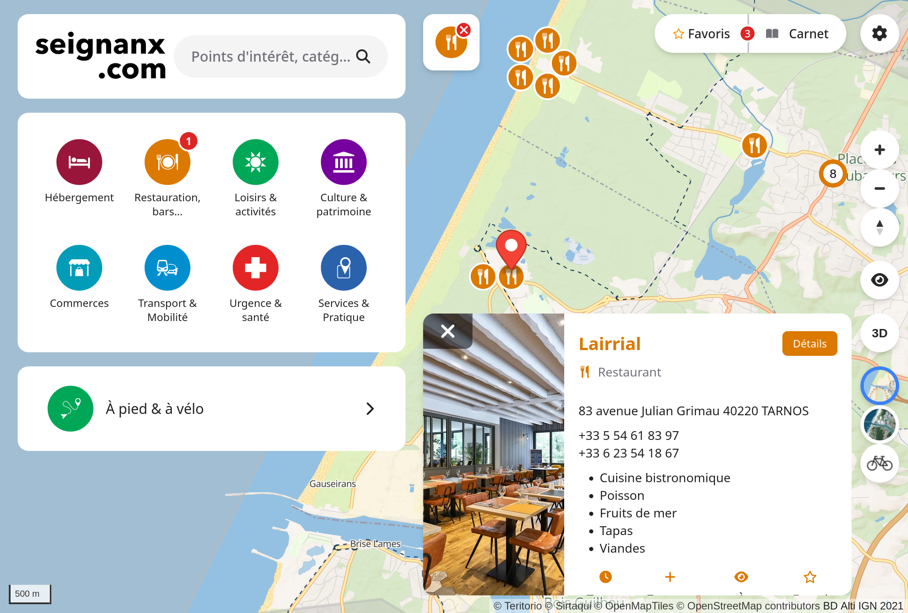
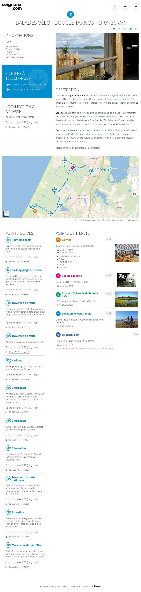
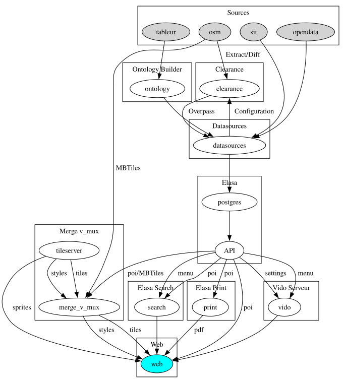

# Stack CartoGuide ## De la donnée OSM ## à la carte web interactive <hr/> ## SotM FR 2025 Frédéric Rodrigo - Teritorio f.rodrigo@teritorio.fr <!-- Aperçu technique du cheminement de la donnée et des logiciels libres développés et mis en œuvre par Teritorio pour présenter des données maîtrisées et uniformisées sur une carte web. CartoGuide est un écosystème de logiciels permettant l'utilisation de données OSM, métier et tierces sur une carte web grand public. Tout commence par l'ontologie, qui définit une arborescence thématique de POI avec les définitions des tags OSM d'identification des objets, les traductions, les tags complémentaires... et des représentations d'icônes et de couleur. Ces POI sont extraits d'OSM par le projet Datasources via le proxy qualité de données OSM Clearance. Datasources permet également de convertir d'autres sources de données au format OSM et de garantir que les attributs sont correctement structurés et donc interprétables et avec leurs traductions. Toutes les données sont converties dans un format dérivé des tags OSM, structuré sur plusieurs niveaux et parfois enrichi... et intégralement documenté. Ces données sont ensuite mises à disposition par une API (Elasa) et affichées sur une carte Web (Vido). --> ---  ---- ## Stack CartoGuide - Stack pour faire du SaaS - multi-clients, multi-cartes, multi-thématiques - Libre, sur [Github](https://github.com/teritorio/), disponible en Docker --- ## Ontologie Hiérarchie de POI sur 3 niveaux - JSON - Ontologie Tourisme - Ontologie Ville ---- ## Ontologie - Exemple `amenity` > `sanitary` > `toilets` - Sélection : `[amenity=toilets][access!~"no|private"]` - Traduction : `EN: toilets, FR: toilettes` - Groupe d'attributs : `base`, `fee`, `access`, `toilets`, `disabled` - Affichage : icône et couleur ---- ## Ontologie - Ex d'Attributs <table><thead> <tr> <th>Clé / Valeur</th> <th>FR</th> </tr></thead> <tbody> <tr> <td><code>wheelchair=</code></td> <td>accès en fauteuil roulant</td> </tr> <tr> <td style="text-align: right;"><code>yes</code></td> <td>accessible en fauteuil roulant</td> </tr> <tr> <td style="text-align: right;"><code>no</code></td> <td>non accessible en fauteuil roulant</td> </tr> <tr> <td style="text-align: right;"><code>limited</code></td> <td>accès en fauteuil roulant limité (partiel)</td> </tr> <tr> <td><code>capacity:disabled=*</code></td> <td>nombre de places réservées (PMR...)</td> </tr> </tbody></table> ---- <iframe width="100%" height="800px" src="https://teritorio.github.io/ontology-builder/teritorio-tourism-ontology-2.0.html"></iframe> ---- ## Ontologie Sources - https://teritorio.github.io/ontology-builder/teritorio-tourism-ontology-2.0.html - https://teritorio.github.io/ontology-builder/teritorio-tourism-ontology-2.0.json - https://teritorio.github.io/ontology-builder/teritorio-city-ontology-2.0.json - https://teritorio.github.io/ontology-builder/teritorio-city-ontology-2.0.html --- ### Elasa-Datasources ## Un ETL pour OSM https://github.com/teritorio/elasa-datasources - Récupérer les données - OSM/Overpass, OpenData, API... - Transformation et enrichissement - Jointure, géocodage inverse, isochrone... - Normalisation et structuration - Unités, noms, adresses... ---- ```json "properties": { "tags": { "phone": ["+262 2 62 97 77 77"], "stars": "3", "tourism": "hotel", "website": ["https://tulip-inn-sainte-clotilde-la-reunion.goldentulip.com/"], "opening_hours": "24/7", "internet_access": "wlan", "name": { "fr-FR": "Tulip Inn" }, "addr": { "city": "Sainte-Clotilde", "postcode": "97490", "street": "31, Avenue Leconte de Lisle" }, "ref": { "FR:SIRET": "50196103100025" } }, "id": "n12526102257", "updated_at": "2025-05-21T13:27:30", "source": "<a href=\"https://www.openstreetmap.org/copyright\" target=\"_blank\">© OpenStreetMap contributors</a>" } ``` ---- ### Elasa-Datasources ## Un ETL pour OSM - Validation : [JSON Schema](https://github.com/teritorio/elasa-datasources/tree/master/datasources/schemas/tags) - i18n : tout est traduit pour les humains -> Assure que toutes les données en sortie sont documentées, valides (schéma) et traduites -> Produit de simples fichiers : GeoJSON, JSON Schema, traductions ---- ### Elasa-Datasources ## Configuration OSM ```yaml streetart-bayonne: connector: type: OverpassSelect metadata: name: fr-FR: Streetart overpass: https://clearance.teritorio.xyz/api/0.1/projects/france_pyrenees_atlantiques_poi/overpasslike relation_ids: [166713] select: - "[tourism=artwork][operator=\"Communauté d'agglomération Pays Basque\"]" ``` ---- ### Elasa-Datasources ## Ontologie OSM Génération depuis l'ontologie - Requêtes Overpass - Schéma d'attributs - Traductions ---- ### Elasa-Datasources ## Ontologie OSM ```yaml ontology: connector: type: TeritorioOntology relation_ids: [4632597] ontology_url: https://raw.githubusercontent.com/teritorio/ontology-builder/gh-pages/teritorio-tourism-ontology-2.0.json overpass: https://clearance.teritorio.xyz/api/0.1/projects/france_landes_poi/overpasslike filters: amenity: sanitary: drinking_water: toilets: select: "[amenity=toilets]" waste: [...] ``` ---- ## Clearance Overpass, oui mais l'Overpass de [Clearance](https://github.com/teritorio/clearance) Filtre qualité d'accès aux données OSM  ---- ### Elasa-Datasources ## Données tierces - SIT, DataTourisme... - CSV, GeoJSON, INSEE BPE... - GTFS, Source GDAL... -> Tout est converti en pseudo tags OSM, avec JSON Schema et i18n. Tags OSM + attributs non convertibles --- ## Elasa ### Back office de la carto web - Base de données Postgres - Contient les GeoJSON de Elasa-Datasources - Paramètres de la carte web - Menu, icônes, couleur, titre, logo... - API - Interface d'administration : Directus (CMS Headless) ---- ### Elasa ## Données métiers Tables de données qui ne peuvent pas aller dans OSM Administrées directement dans Elasa - Données métiers - Itinéraire non OSM - Données éditorialisées - Description commerciale, photo... - Événementiel, travaux --- ## Vido ### Carte Web - MapLibre + Plugin Teritorio Cluster - Menu + Filtres - Recherche - Carnet de POI favoris - Parcours et polygones - Fiche de détail, points de passage et points d'intérêt liés ---- <a href="https://carte.seignanx.com/12100/16873#map=12.42/43.5514/-1.49997"><p></p></a> ---- <a href="https://carte.seignanx.com/poi/8446/details"><p></p></a> --- ## Elasa-Search / Addok - Indexation des menus et filtres - Indexation des POI - Un seul Addok pour toutes les cartes, un filtre par carte ----  --- ## V-Mux-GL Fond de carte Vectoriel - Vido et autres - Configuré par l'ontologie - POI substitués à la volée par ceux de l'API d'Elasa  --- ### Stack CartoGuide [Ontologies](https://github.com/teritorio/ontology-builder/tree/gh-pages) [OSM](https://osm.org) > [Clearance](https://github.com/teritorio/clearance) > [Datasources](https://github.com/teritorio/elasa-datasources) > [Elasa](https://github.com/teritorio/elasa) > [Vido](https://github.com/teritorio/vido) [Elasa Search](https://github.com/teritorio/elasa-search/) [V-Mux-GL](https://github.com/teritorio/v-mux-gl/) ---- <p></p> ---- ## Takeaway